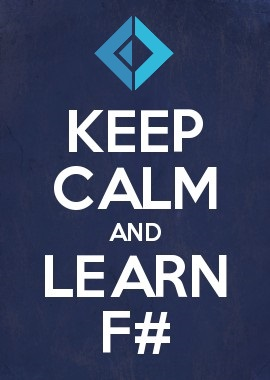
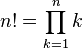
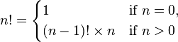
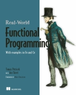
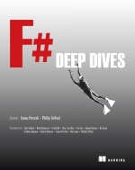
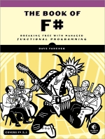
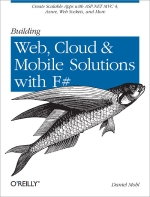

Grigoriy BelenkiyWrite a program that prints the numbers from 1 to 100. But for multiples of three print “Fizz” instead of the number and for the multiples of five print “Buzz”. For numbers which are multiples of both three and five print “FizzBuzz”.


(CNN) -- NASA lost a $125 million Mars orbiter because a Lockheed Martin engineering team used English [imperial] units of measurement while the agency's team used the more conventional metric system for a key spacecraft operation, according to a review finding released Thursday.
Real-World Functional Programming With examples in F# and C#by Tomas Petricek with Jon Skeet |
F# Deep Divesedited by Tomas Petricek and Phillip Trelford |
The Book of F#by Dave Fancher |
Building Web, Cloud, and Mobile Solutions with F#by Daniel Mohl |